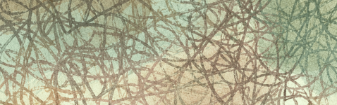
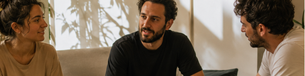
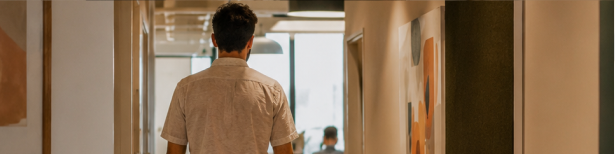
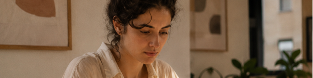
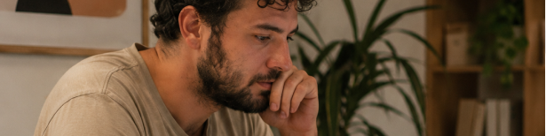
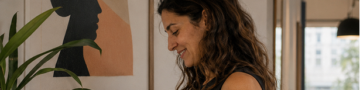

הצעת ערך לארגונים שמבינים שההון האנושי שלהם הוא המשאב המוביל
מגוון כלים, תהליך אחד
האתגר כבר אינו רק לגייס אנשים מצוינים — אלא לשמר אותם, לפתח אותם ולמנוע את השחיקה השקטה שמתרחשת גם אצל העובדים החזקים ביותר.

מה אני מציעה
ליווי אישי אסטרטגי לעובדים ולמנהלים (1:1)
תהליך אישי שמסייע לעובדים ולמנהלים להתמודד טוב יותר עם אתגרים מקצועיים ואישיים המשפיעים ישירות על הביצועים שלהם.
אנשים מצוינים לא נשארים מצוינים במקרה. אנשים שמתפתחים — נשארים. אנשים שנשארים — מייצרים יציבות, חדשנות וצמיחה עסקית.

-
ייעוץ ארגוני ואימון אישי
חיבור בין הצרכים העסקיים לבין הפוטנציאל האישי של העובד.
-
גישור וניהול קונפליקטים
כלים מקצועיים לפתרון מתחים בין-אישיים וצוותיים.
-
הנחיית קבוצות ותהליכי עומק
עבודה ברמת הפרט, עם חיבור מדויק לצרכי הארגון.
נושאים שהתהליך נוגע בהם
האתגר
לשמר, לפתח ולמנוע שחיקה שקטה
בעולם העבודה החדש — בתחום החדשנות וסביבות ביצוע אינטנסיביות — האתגר האמיתי אינו רק לגייס אנשים מצוינים, אלא לשמר אותם ולמנוע שחיקה שקטה גם אצל העובדים החזקים ביותר. לעיתים דווקא הם נפגעים ראשונים: לוקחים על עצמם יותר, מבקשים פחות עזרה — עד לנקודת שחיקה, ירידה בביצועים או עזיבה.
- שימור
- העצמה
- קידום
-
עומסים וקצב אינטנסיבי
לוח זמנים תובעני בלי מרחב אמיתי לעצור ולצמוח.
-
קונפליקטים בין-אישיים
מתחים בצוות או מול הנהלה שפוגעים בתפקוד.
-
שחיקה סמויה
מצב של תשישות רגשית ומנטלית הנגרם מלחץ ממושך בעבודה
-
איזון בין הצלחה לחיים אישיים
להצטיין בקריירה לצד חיים אישיים עשירים, ללא שחיקה.
מבנה התהליך
מפגשים שבועיים אישיים
תהליך מובנה שנע בקצב אישי — החל משלב ההיכרות ומיפוי הצרכים ועד רכישת הכלים הנדרשים ויישומם בשטח.
לתיאום שיחת היכרות-
מיפוי
איפה העובד נמצא היום
הבנת המצב, האתגרים והצרכים — של העובד ושל הארגון.
-
הגדרת יעדים
מטרות לתהליך
הגדרת חזון ומיקוד המטרה הרצויה.
-
הטמעה
מגוון כלים המגיעים מעולמות הייעוץ והטיפול
יישום בשגרת העבודה היומיומית ומעבר לה, לא רק בחדר הליווי.
הערך לארגון
מה הארגון מרוויח מהתהליך
ארגונים משקיעים רבות בגיוס טאלנטים — הארגונים המובילים משקיעים גם ביכולת שלהם להחזיק לאורך זמן ולצמוח.
עובדים חזקים שנשארים ומתפתחים בתוך הארגון לאורך זמן.

זיהוי וטיפול במוקדי שחיקה לפני שהם הופכים לעזיבה.

מנהלים בטוחים יותר, שמובילים צוותים ביציבות.

יכולת לייצר שפה משותפת, ברורה ומסונכרנת בין המנהלים, הצוותים והעובדים.
השקעה בעובדים שמובילה לתפוקה גבוהה

ליצור שינוי בר-קיימא המוכיח את עצמו גם זמן רב לאחר סיום התהליך.

המלצות
מילים מאנשים שעברו תהליך
שאלות שחוזרות
לעובדים בכל הרמות בארגון — מהנהלה בכירה ועד צוותים — שהחברה מעוניינת להשקיע בהם.
12–15 מפגשים אישיים, אחת לשבוע. המספר המדויק נקבע לפי הצורך של העובד ושל הארגון.
תהליך ייחודי לארגונים המשלב ברצף אחד ייעוץ ארגוני אסטרטגי, תהליכי גישור, והנחיית קבוצות – לצד כלים מעשיים של אימון, ליווי ופיתוח אישי.
שיחת היכרות
נתחיל בשיחה אחת
אפשר להשאיר פרטים, ונבדוק יחד — בלי התחייבות — האם התהליך מתאים לך או לארגון שלך.